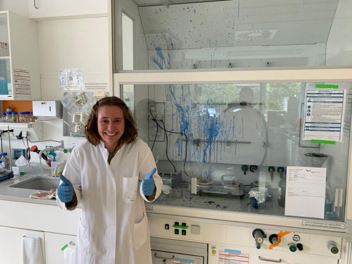
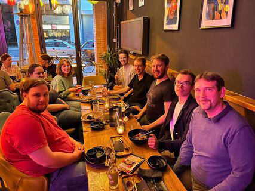

Everyone makes mistakes.

A picture I took in downtown Hannover during one of my runs there.

My lab members.
I spent the summer of 2023 studying cytoskeletal protein dynamics at the Institute for Biophysical Chemistry at Hannover Medical School in Hannover, a city of about 700,000 in northern Germany. Moving to Germany thankfully went very smoothly because my graduate student mentor and PI both helped me find student housing on-campus and handled various bureaucratic onboarding obstacles. It took a bit longer for me to get used to the lab culture—I didn’t realize how different the research working environment would be in Germany. My favorite difference: in my lab in Hannover, all of the students and post-docs go to the mensa (canteen) together every day to eat lunch. During these lovely (often hour-long) lunches, I learned so many things about German culture (and food). From learning about the German dish mett to going through Harry Potter trivia, these lunches were some of my favorite memories from the lab.
A typical day of my internship started with walking to the lab from my apartment, grabbing a cup of coffee and settling in, checking in with my mentor, and organizing my day. I often conducted an experiment in the morning before lunch. Throughout the internship, I had the chance to do a number of techniques, including PCR mutagenesis, protein purification, biophysical assays, microscopy, and molecular dynamics. In the afternoon, I would either conduct another experiment or just analyze data and read the literature. I usually worked from 9 a.m. to 5 p.m., but there were some days where I came/left earlier/later depending on the timing required in the wet lab. After work, I usually went on a run around the many green spaces of Hannover (called “the garden city” because of how many parks it has) or hung out with the other interns located in Hannover. I loved the city’s walkability and public transport, even in the suburb where the medical school was located; I'm going to miss this in the US!
Outside of the lab, some of my favorite moments this summer came from traveling around Germany and Europe on the weekends. The DAAD RISE meeting in Heidelberg was definitely a highlight; it was so fun to explore the city with new intern friends located across Germany. I traveled almost every weekend of the 13 weeks that I was in Germany; I saw so many cities, including Berlin, Munich, Amsterdam, Copenhagen, Prague, and Bruges. I cannot emphasize how transformative traveling around all of these European cities was. I loved traveling via train, too. However, a big irony about German trains, and counter to the idea of German efficiency, is that the Deutsche Bahn almost always has delays (in an especially odd case, once my train was delayed by 45 minutes because there were kids taking selfies on the track).
Of course, working in a foreign country 5,000 miles from home wasn’t always easy. There were language barriers in navigating the suburb I lived in; I learned some basics on Duolingo before I went, but it's a hard language! It was also sometimes difficult to stay positive when I inevitably make mistakes. For me, one of these moments happened when I accidentally boiled a protein gel I was staining in Coomassie; the gel exploded and blue dye splattered all over the fume hood (picture below). It was pretty humbling, but because of that and many other experiences during my internship, I think I am becoming a more resilient and thoughtful person. It helped to remember that this internship was first and foremost a learning opportunity for me both academically and personally, and I can confidently say that this experience challenged and expanded my viewpoints and assumptions while enabling me to learn a lot of cool science, which you can read about in more detail here.
Everyone makes mistakes.
A picture I took in downtown Hannover during one of my runs there.
My lab members.

HTML Creator